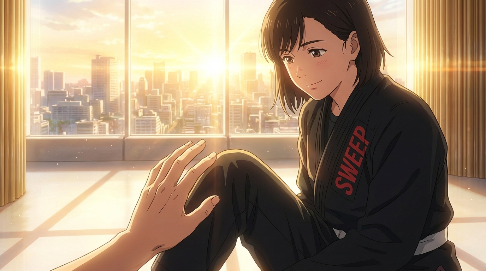
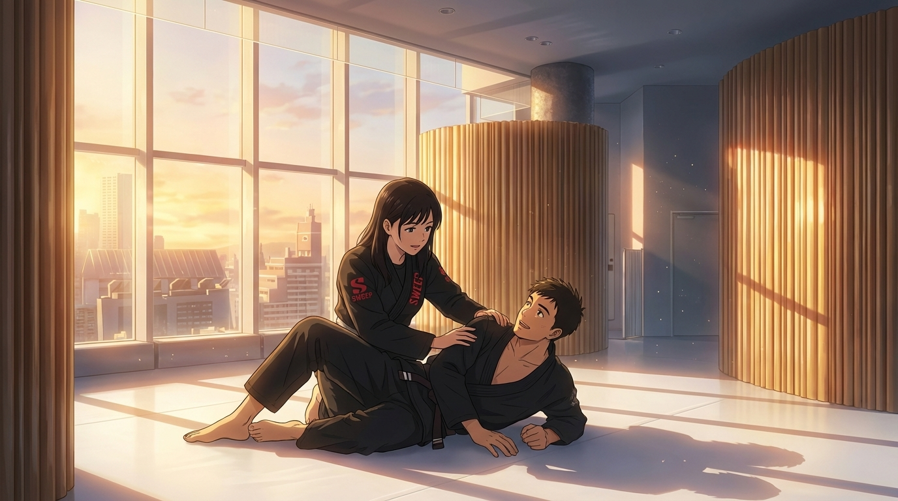
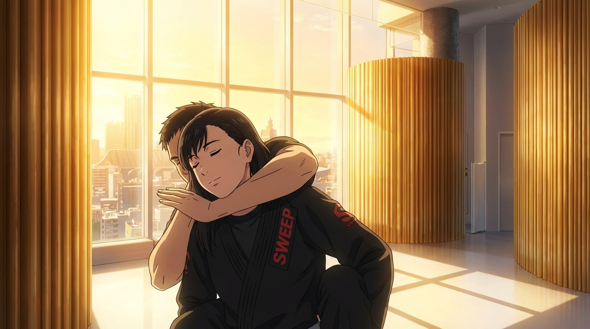
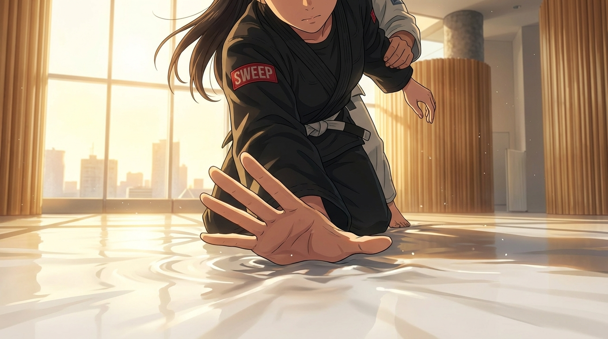

歌詞の「tap, tap, tap」の瞬間に使う画像を選んでください（複数箇所あり）
彼女がアームバーで極められ、フリーハンドで相手の太ももをタップ。痛みと受容の表情。

彼女が三角絞めをかけ、相手が彼女の太ももをタップして降参。勝利の穏やかな笑み。

極めた後、相手の肩を優しく3回タップ。降参ではなく感謝のタップ。ダブルミーニング：参った AND 愛情。
女性の手が男性の前腕をタップ。マクロ撮影。3つの金色パーティクル。BJJで最も親密な瞬間。

後ろから絞められ、相手の腕をタップ。穏やかな降参。街のスカイラインが背景。

床をパンと叩く。もう一つのタップ方法。床面のレベルから撮影。生々しく正直な瞬間。